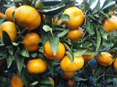

みかん（蜜柑）の生産量
いちばん多くとれる都道府県
みかんが日本でいちばん多くとれるのは和歌山県です。14万1,700 tで、全国（55万9,600 t）の25%を占めます。

| 順位 | 都道府県 | 収穫量 | 全国に占める割合 |
|---|---|---|---|
| 1位 | 和歌山県 | 14万1,700 t | 25% |
| 2位 | 静岡県 | 8万8,500 t | 16% |
| 3位 | 愛媛県 | 7万6,100 t | 14% |
この数字について
- 分類：ミカン科
- 全国の収穫量：55万9,600 t
- この数字が表すもの：収穫量（畑や田でとれた重さ）
- 調査：作物統計調査 作況調査（果樹） 令和6年産
- 20県分を調査（調査していない県は順位に入りません）